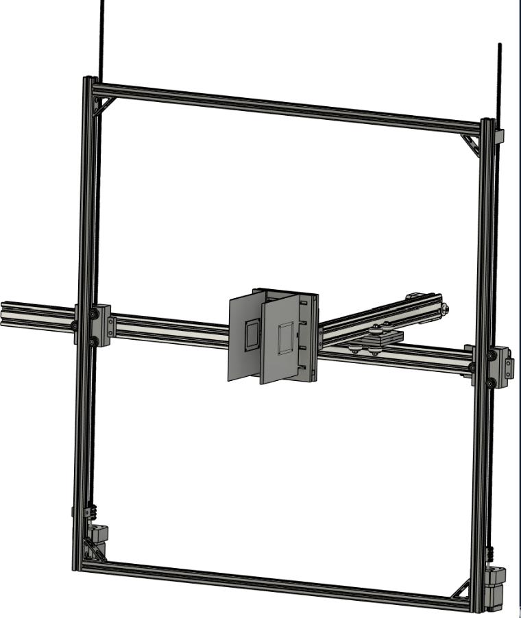
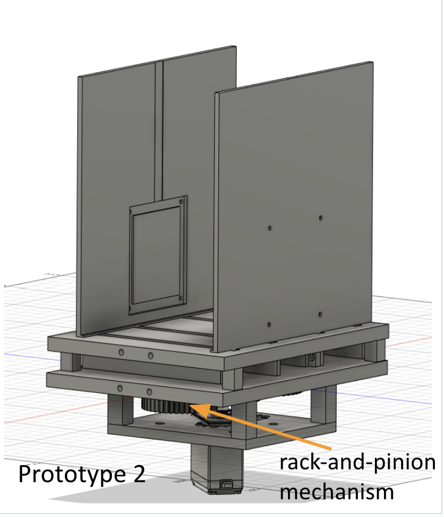

Automatic Bookshelf Managing System (ABMS)
A 24-671 EMSD project: a Cartesian gantry + rack-and-pinion gripper + QR-based vision system that automates book storage and retrieval.
Electromechanical Design
Cartesian Gantry
Rack-and-Pinion Gripper
FSR Safety
OpenCV / QR
Arduino + Python

If you don't have
assets/images/emsd_hero.png, replace with your best final assembly photo.
Links
Keep only real links. Avoid placeholders (they reduce credibility).
Objective & Metrics
ABMS aims to reduce manual shelving effort by automatically identifying books (QR), moving to shelf coordinates (gantry), and safely gripping/placing books (gripper + FSR).
Primary objective
Automated store & retrieve workflow
Handling envelope
1–10 cm thickness, up to 2.5 kg
Safety metric
Force-limited gripping (FSR)
System metric
Correct CSV inventory mapping
Introduction
Libraries and large collections spend significant time on sorting and reshelving. ABMS automates the physical handling loop: scan → plan placement → move → grip → insert → log; and later retrieve using the stored location.
System Pipeline
- Identify: camera reads QR code; map book ID to shelf coordinates.
- Plan: find free slot (gap) and compute placement pose.
- Move: Cartesian gantry navigates to target shelf location (with homing + limits).
- Handle: rack-and-pinion gripper clamps with FSR-limited force.
- Log: update CSV database (ID, layer, x-position, thickness).
Methods
Hardware
- 3-axis gantry built from 20×20 mm aluminum extrusion.
- NEMA 17 stepper motors (TB6600 drivers) for axes; servo for gripper actuation.
- Limit switches for safe homing; FSR for grip-force limiting.
Software
- Python orchestration + serial control; Arduino firmware for low-level motor control.
- OpenCV-based QR detection to index books.
- CSV inventory map to track placement and retrieval.

Results
- End-to-end demo: store → log → retrieve cycle demonstrated with QR + CSV updates.
- Repeatability: gantry returns to shelf coordinates reliably after homing.
- Safety: FSR prevents over-clamping during pickup and insertion.
- Limitations: very heavy/oversized books and structural compliance reduce robustness.
If you have numbers (cycle time, success rate, error), replace these bullets with concrete metrics.
My Contribution
- Mechanical design iterations for gantry–gripper integration under shelf constraints.
- Rack-and-pinion gripper design and validation support (including stress/deflection checks).
- Integrated sensing constraints (limit switches, FSR) into system interface requirements.
- Testing/debug support for store/retrieve sequences and demo preparation.
- Authored this project webpage and curated artifacts.
Poster